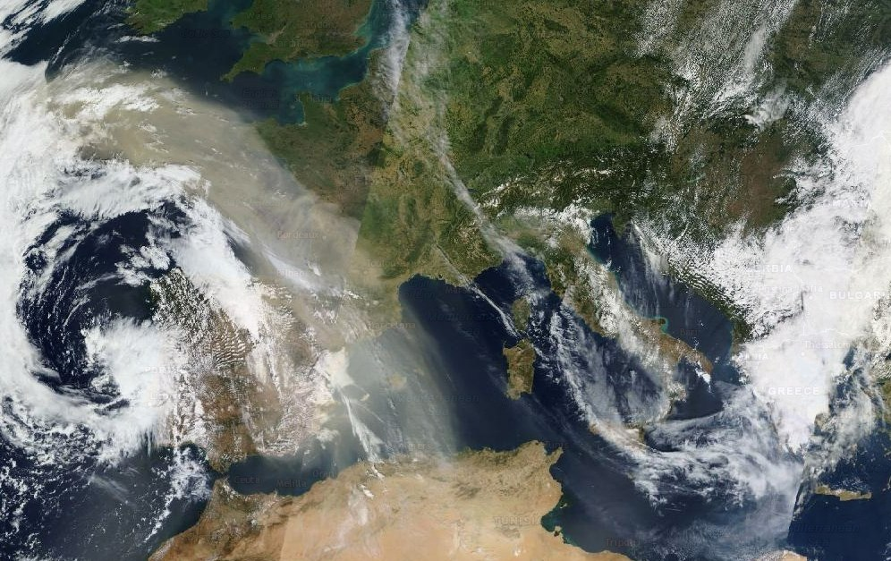
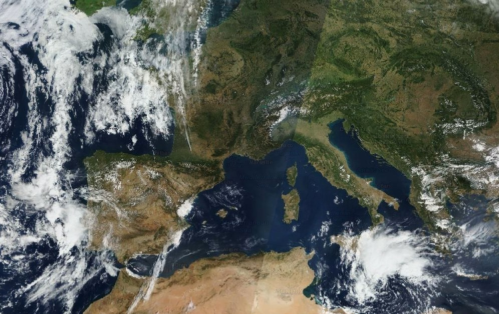

On observe le déplacement de la fumée d'encens pour modéliser le comportement vertical d'une masse d'air chaud et d'une masse d'air froid.
Modèle 3D 2Convection
Boîte à vent & Naissance du vent
Allumez la bougie pour chauffer l'air sous la cheminée gauche et observez la mise en mouvement de l'air froid entrant à droite.
Modèle 3D 1Surface
Action du vent sur l'eau de surface
On souffle avec la paille au-dessus d'une goutte de colorant pour modéliser l'action des vents dominants sur la nappe d'eau.
Intensité du souffle :0 %
Modèle 3D 2Circulation profonde
Échanges eau chaude / eau froide
Ouvrez les vannes reliant la colonne d'eau chaude (rouge) et la colonne d'eau froide (bleue) pour observer le sens des flux verticaux.
Compétences D4 & D1
Question 1 : Déplacement vertical de l'air
En observant la fumée sous le bloc à température ambiante et sous le bloc congelé, décrivez les résultats puis concluez sur le déplacement d'une masse d'air chaud et d'une masse d'air froid en vous appuyant sur la densité.
💡 Attendus : Précisez dans quel cas la fumée monte ou descend, et expliquez le phénomène avec la notion de densité de l'air.
✅ Corrigé attendu : Sous le bloc ambiant (tempéré), l'air se réchauffe et monte en entraînant la fumée. Sous le bloc congelé (froid), l'air refroidi devient plus dense et redescend vers le bas. Conclusion : L'air chaud est moins dense et s'élève (mouvement ascendant), tandis que l'air froid est plus dense et plonge vers le sol (subsidence).
Compétences D4 & D1
Question 2 : Naissance du vent & Pressions
Lorsque la bougie est allumée, décrivez le trajet de l'air chaud et de l'air froid, puis expliquez comment se forme le vent entre les zones de haute et de basse pression.
🔬 Mots-clés : Bougie, Basse pression (air ascendant), Haute pression (air froid descendant), Sens du vent horizontal.
✅ Corrigé attendu : Au-dessus de la bougie, l'air chaud s'élève et crée une zone de Basse Pression (dépression). L'air froid descend par l'autre cheminée et crée une zone de Haute Pression (anticyclone). Le vent horizontal au sol souffle toujours de la Haute Pression vers la Basse Pression.
Compétences D4 & D1
Question 1 : Les courants océaniques de surface
À partir du modèle 3D du cristallisoir, décrivez le résultat observé (déplacement de l'eau et du colorant vert), puis expliquez ce qui met en mouvement les courants océaniques de surface à l'échelle de la planète.
💡 Attendus : Reliez le souffle de la paille aux vents dominants de surface et aux différences de pression.
✅ Corrigé attendu : Quand on souffle à la surface avec la paille, l'eau et le colorant vert se déplacent en surface vers la droite, puis se dispersent sur les côtés en heurtant la paroi du fond. À l'échelle du globe, ce sont les vents dominants qui frottent sur l'eau et mettent en mouvement les courants marins de surface.
Compétences D4 & D1
Question 2 : Les courants marins verticaux
Après l'ouverture des tubes reliant les deux colonnes, décrivez le trajet de l'eau chaude (rouge) et de l'eau froide (bleue), puis expliquez ce résultat à l'aide de la notion de densité.
💡 Attendus : Expliquez clairement pourquoi l'eau froide plonge en bas et l'eau chaude circule en haut.
✅ Corrigé attendu : L'eau chaude rouge circule par le tube supérieur en surface car elle est moins dense. L'eau froide bleue plonge et circule par le tube inférieur au fond car elle est plus dense. Cette différence de température et de densité est le moteur des courants océaniques profonds (circulation thermohaline).
Donnée satellite MODIS TerraFrance & Sahara (Septembre 2023)
🛰️ Panache de poussières de sable du Sahara (« Dust ») et canicule tardive


↔
4 Sept. 2023 (Avant)
8 Sept. 2023 (Dust sur la France)
👉 Faites glisser la barre jaune de gauche à droite sur l'image pour comparer le ciel avant et après l'arrivée du sable saharien.
Constat météorologique : En septembre 2023, la France subit une vague de chaleur tardive historique (plus de 35 °C mesurés). Simultanément, les satellites révèlent un immense panache ocre de poussières de sable du Sahara (« dust ») traversant la Méditerranée et recouvrant le ciel français.
Compétence D4 • Démarche scientifique
❓ Problème & Hypothèse
En reliant l'image satellite du panache de sable et la météo caniculaire en France, formulez le problème scientifique puis proposez une hypothèse.
✅ Corrigé attendu : Comment expliquer l'origine de cette vague de chaleur tardive en septembre 2023 en France et la présence de poussières de sable du Sahara ?
✅ Corrigé attendu : On peut penser qu'un flux atmosphérique d'air chaud venant du sud (visualisé par le sable transporté) est à l'origine de cette canicule en France.
Documents scientifiques réelsPacifique Sud • Atoll inhabité
🏝️ Le mystère des déchets plastiques de l'île Henderson
⛶ Plein écran
📸 Plage d'Henderson : Plus de 17 tonnes (38 millions) de débris plastiques échoués.
⛶ Plein écran
📍 Isolement extrême : Située à plus de 5 000 km de tout continent habité.
Constat écologique : L'île Henderson est un atoll corallien strictement inhabité au cœur du Pacifique Sud. Pourtant, ses plages possèdent la plus forte densité de pollution plastique au monde, provenant d'Amérique du Sud, d'Asie et de navires de pêche lointains.
Compétence D4 • Démarche scientifique
❓ Problème & Hypothèse
À partir de ces deux documents réels, formulez la question scientifique que l'on se pose puis émettez une hypothèse explicative.
✅ Corrigé attendu : Comment expliquer l'accumulation massive de déchets plastiques sur les plages de l'île Henderson alors qu'elle est inhabitée et isolée à plus de 5 000 km des continents ?
✅ Corrigé attendu : On peut penser que des courants marins de surface transportent les déchets flottants à travers l'océan et les amènent jusqu'aux rivages de l'atoll.
Modélisation du réel • Haute définitionSynoptique & Coupe convective
🗺️ Carte synoptique (Septembre 2023) & Boucle convective
Compétences D1 & D4 • Bilan d'investigation
🔎 Question 3 : Résoudre le problème initial
À l'aide des résultats de vos modèles 3D et des documents A et B, expliquez comment les différences de température et de pression ont généré le vent ayant transporté le sable du Sahara et la vague de chaleur sur la France en septembre 2023.
1. Expliquer comment le sable est soulevé (air chaud moins dense = Basse Pression).
2. Rappeler le sens du vent (de la Haute Pression vers la Basse Pression).
3. Valider explicitement votre hypothèse de l'étape 1.
4. Utiliser des connecteurs logiques (car, donc, parce que, ainsi...) pour relier vos explications.
✅ Corrigé attendu : Au niveau du Sahara, l'échauffement intense du sol réchauffe l'air qui s'élève par ascendance thermique (l'air chaud est moins dense) en créant une Basse Pression et en soulevant les poussières de sable. Les différences de pression atmosphérique créent un vent qui souffle toujours de la Haute vers la Basse pression. Ce puissant vent du Sud transporte l'air caniculaire et le sable en suspension jusqu'en France : mon hypothèse de départ est ainsi confirmée.
Activité interactive • Manipulation au doigt / sourisCourants de surface & Vents dominants
🗺️ 1. Tracer le sens des courants marins de surface (Points 1 à 6)
Rouge = Courant chaud, Bleu = Courant froid. Les flèches grises indiquent les vents dominants qui entraînent l'eau.
👉 Glissez depuis chaque point numéroté (1 à 6) pour orienter la flèche dans le sens du courant entraîné par le vent, puis cliquez sur « Vérifier » !
🌊 2. Le Moteur Universel : Courants chauds de surface & Courants froids profonds
Synthèse • Résolution du problème
Question 3 : Expliquer l'accumulation des plastiques sur l'île Henderson
À l'aide de la carte interactive et des modèles, expliquez comment les déchets plastiques jetés à des milliers de kilomètres s'accumulent sur les plages de l'île Henderson (reliez vents dominants, courants de surface et gyres océaniques).
💡 Consigne de rédaction : Utilisez des connecteurs logiques (car, donc, ainsi, parce que...) pour expliquer l'enchaînement de cause à effet.
✅ Corrigé attendu : Les vents dominants mettent en mouvement les courants océaniques de surface qui s'organisent en gigantesques tourbillons circulaires à l'échelle des bassins océaniques : les gyres océaniques. Ces gyres concentrent et transportent tous les débris plastiques flottants d'Amérique du Sud ou d'Asie vers le centre du Pacifique Sud, où ils finissent piégés et viennent s'échouer en masse sur les plages de l'atoll d'Henderson.
Transmission numériqueGoogle Sheets sécurisé
📤 Étape finale : Envoyer mon travail au professeur
Vérifiez que votre NOM, Prénom et Classe sont bien saisis en haut de page, puis cliquez ci-dessous pour transmettre automatiquement l'ensemble de vos réponses rédigées et vos évaluations.
Auto-évaluation guidéeCode enseignant
🔐 Déverrouiller le Bilan, la Grille critériée et le Corrigé
Une fois vos réponses transmises, demandez le code de déverrouillage à votre professeur pour afficher le corrigé détaillé sous chaque question et votre grille critériée.
❌ Code incorrect. Demandez le code au professeur.
📊 Mon Évaluation par Grille Critériée
Score Global
0 / 10
D4 — Démarche/Modèles
0 / 4
D1 — Explication physique
0 / 4
Maîtrise Langue
0 / 2
Étape / Compétence
Critère de réussite évalué
Statut
Points
✅ Corrigé type complet
📌 Notions essentielles à retenir (Bilan de cours)
1. Mouvements verticaux et pression atmosphérique / océanique : L'air chaud ou l'eau chaude est moins dense : il/elle s'élève (ou reste en surface). À l'inverse, l'air froid ou l'eau froide est plus dense : il/elle descend (plonge vers le fond).
2. Naissance du vent et des courants marins de surface : Le vent est un déplacement horizontal d'air qui souffle d'une zone de Haute Pression vers une zone de Basse Pression. En frottant sur l'océan, ces vents dominants mettent en mouvement les courants marins de surface, formant de grands tourbillons (gyres) qui emportent chaleur, sable désertique et déchets plastiques.
 ⛶ Plein écran
⛶ Plein écran
 ⛶ Plein écran
⛶ Plein écran